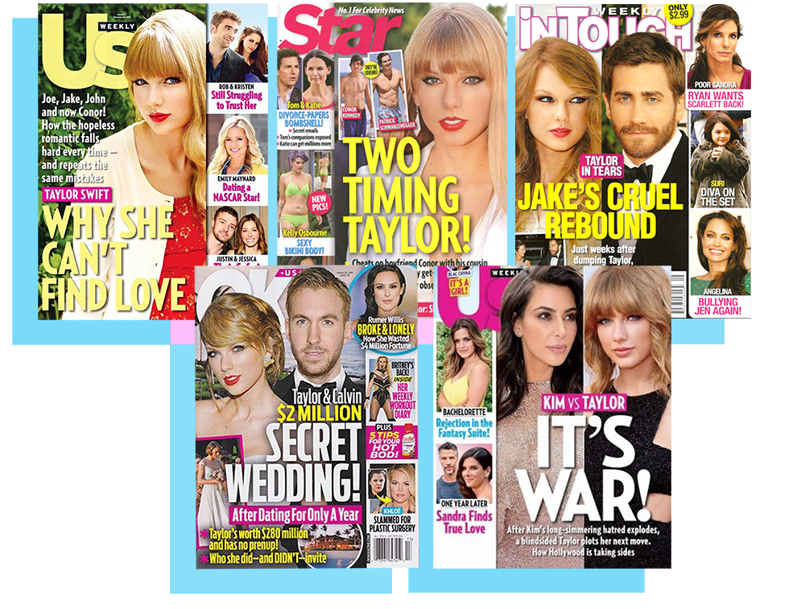

How Taylor Swift Played The Victim For A Decade And Made Her Entire Career
Taylor Swift’s embrace of victimhood doesn’t begin and end with Kanye West – it can be traced back to the start of her decade-long career in both her music and her relationship with the media.
Last January Kanye West called Taylor Swift to ask whether she’d mind if he wrote a song in which he referenced having sex with her. After hearing lyrics, she told him that they “didn’t matter” to her. But she had an idea.
“If people ask me about it,” she said, her voice picking up with excitement, “I think it’d be great for me to be like, ‘Look, he called me about the line before it came out. Joke’s on you guys! We’re fine.’” Swift told West she’d be doing just that on the Grammys red carpet, weeks after the song’s release.
It was released, however, to the public’s immediate revulsion. The lyrics were described as sexist, misogynistic, and deeply offensive, with many West fans threatening to boycott him. He attempted to explain that Swift was aware of its content, but she didn’t enact her plan. Instead Swift released a statement publicly decrying the song as “misogynistic”, claiming she’d cautioned West against releasing it.
And at the Grammys, Swift took to the stage to accept her award for Album of the Year and made a passionate speech. “To all the young women out there,” Swift warned, “there are going to be people along the way who will try to undercut your success, or take credit for your achievements.” Then, looking directly down the lens of the camera, she said: “Or your fame.” She paused for several seconds, allowing her message to percolate.
Swift had witnessed the negative reaction to “Famous.” Her spokesperson said she was never made aware of the lyric: “I made that bitch famous.” She reverted back to a well-practised posture: that of victim.
Swift’s speech at the Grammys was arguably the catalyst for West’s wife, Kim Kardashian, stepping in. Three months after the awards ceremony, she told GQ that she believed the speech was a deliberate attempt to “diss” West after he’d done nothing but “follow protocol”. She went on to claim that not only had Swift “totally approved” the lyrics in “Famous”, but that there was also video footage to prove it.
Swift’s official response included in the interview said that she had not been aware that she was being recorded, and concluded with the line: “Taylor cannot understand why Kanye West and now Kim Kardashian will not leave her alone.”
Her spokesperson also told GQ: “Taylor does not hold anything against Kim Kardashian as she recognizes the pressure Kim must be under and that she is only repeating what she has been told by Kanye West. However, that does not change the fact that much of what Kim is saying is incorrect. Kanye West and Taylor only spoke once on the phone while she was on vacation with her family in January of 2016 and they have never spoken since. Taylor has never denied that conversation took place. It was on that phone call that Kanye West also asked her to release the song on her Twitter account, which she declined to do. Kanye West never told Taylor he was going to use the term ‘that bitch’ in referencing her. A song cannot be approved if it was never heard. Kanye West never played the song for Taylor Swift. Taylor heard it for the first time when everyone else did and was humiliated.”
Two months after the interview, we saw Kim Kardashian sitting on a plush velvet couch, talking about it with her sister Kourtney as the Keeping Up With the Kardashians cameras rolled. “You know I never talk shit about anyone publicly, especially in interviews,” Kardashian told her sister. “I just felt like I wanted to defend Kanye in it.” Rolling her heavily lined eyes to the ceiling, she sighed, “It was just another way for her to play the victim. It definitely got her a lot of attention last time.”
The phone class between West and Swift released on Kim Kardashians's Snap Story on July 18th, 2016. Some say it is this generation's Moon Landing.
As soon as the episode had aired, Kardashian took to Snapchat and posted 22 consecutive clips without context or captions. But neither were needed: It was immediately clear that Kardashian had leaked footage of the phone call between West and Swift. It’s crucial to note that it took another Caucasian woman – albeit, one with a complex history of proximity to and appropriation of black culture – to expose Swift. West could never have released this audio, because it would have been a continuation of the “threatening” position he’s occupied in their narrative – something Swift referenced in her statement about the phone call on Instagram.
Taylor Swift's reaction to Kim Kardashian's Snapstory.
In the same statement, she asked to be “excluded from the narrative, one that I have never asked to be a part of since 2009.” Doing so harkened back to the moment she and West first met, at the MTV VMAs, where a young Swift clutched her award as West stormed the stage, took the microphone from her, and announced that Beyoncé should’ve won instead.
West made a public apology to Swift, and later said he wasn’t suggesting that she was undeserving – but was speaking out against systemic racism in the music industry, which consistently favours white artists. West said: “It’s not about Kanye West. It’s not about Taylor Swift. There’s a lot of people in America that feel like they don’t have a platform to stand up and express their closet racism.”
He went on to suggest that the MTV judging panel gave Swift the award in a bid to fill the gap left by young white popstar Britney Spears in the wake of her breakdown, adding that he felt the need to “get drunk” in order to cope with “all the lies” in the ceremony.
The dominant reaction, however, was a reflection of what the world has been conditioned to see: the “threat” of an “angry” black man terrorising the “innocent” white woman. Even their clothes reflected the racially fuelled victim/villain framework that would define the incident: The image of West, wearing dark shades and an entirely black outfit, accosting sweet Swift in her white and silver party dress, remains an iconic one.
The fallout for West was immediate. Public opinion spiralled so drastically that even the president branded him a “jackass”. Swift, on the other hand, was able to capitalise on the stereotype of the “angry black man”, an archetype that has been described as a “figment of the white imagination”, used to incarcerate and oppress black men. For Swift, it was PR gold. The incident may not have made her famous, as the lyrics in “Famous” claim, but it certainly catapulted her into the mainstream consciousness.
Despite saying she wants to be “excluded from the narrative”, Swift has reminded the public of this same narrative countless times in jokes and speeches. She even has a framed photograph of the moment in her Nashville home.
In 2010 Swift wrote the song “Innocent”, in which she forgave West with the lyrics: “32 and still growing up / Who you are is not what you did / You’re still an innocent.” Swift debuted the song with a performance at the MTV VMAs, opening with a literal replaying of her run-in with West from the previous year. But the scene was edited to entirely omit West’s infamous line, and the final shot lingered on her overly pained face.
It may seem that Swift’s posture of victimhood is founded on her relationship with West. But it can, in fact, be traced back to the very beginning of her decade-long career.
"In the early days of her career, Swift adhered to the markers of white feminine fragility"
As a young girl, in the early days of her career, Swift adhered to the markers of white feminine fragility, presented as a modern-day ingénue figure. Her passivity and purity were the centrepiece of an appealing narrative constructed around traditional girlhood. These traits manifested literally in the teenager’s videos – white ballgowns, loosely curled hair, Swift gazing out from the turrets of castles – as well as figuratively in her lyrics. Swift sang about waiting for a man on a “white horse” to come and save her, love interests “kneeling to the ground” and proposing, as well as being “enchanted” by “fairy tales”.
The notion of sexual innocence emerged as she cried over her best friend giving “everything she had” to a “boy who changed his mind”, and through the repeated mention of a highly sexualised “other woman” swooping in to steal her love interests. Her innocence also contributed to the emotional impact of the most common theme of all: Swift as the victim of the behaviour of a bad boyfriend, or rejection by her crush. This is a common trope in teen pop music, but for Swift it became the very foundation of her posture as victim.
In “Cold as You”, a track on her first album, released in 2006, Swift sings: “You come away with a great little story / Of a mess of a dreamer with the nerve to adore you.” “You’re Not Sorry”, from her second album, features the lyrics: “All this time I was wasting / Hoping you would come around / I’ve been giving out chances / All you do is let me down.” In “Tell Me Why”, also from her second album, she’s been so worn down by rejection that she’s literally “on the ground”, imagery she’d later revive in “I Knew You Were Trouble”.
As Swift’s celebrity status increased, her love interests morphed from anonymous crushes from high school to famous men. When these relationships ended, the media reported the drama, and Swift did what she’d always done: wrote about her experiences. But as she once said, this writing was “mostly about heartbreak or pain that was caused by someone else and felt by me”. Whether or not she desired the attention, presenting herself as a victim of the betrayal of famous exes fuelled media coverage.
For example, when she and Joe Jonas split in 2008, Swift went on primetime TV to assign the blame firmly to him. Speaking on The Ellen DeGeneres Show, she said: “When I find the right person, I’m not going to be able to remember the boy who broke up with me over the phone in 25 seconds when I was 18.”
Swift appeared on primetime TV to assign the blame to Joe Jonas when they split. The Ellen Show Later that year, she spoke about the breakup during her Saturday Night Live monologue, saying: “You might think I’d mention Joe, that guy who broke up with me on the phone. But I’m not going to talk about him in my monologue. Hey Joe, I’m doing really well, tonight I’m hosting SNL.”
She also wrote the song “Better Than Revenge”, widely assumed to be about the woman Jonas allegedly dumped her for. She fed the rumour when revealing the inspiration behind the song: “It’s about a girl who stole my boyfriend. I think she probably thought I forgot about it.” Slowly turning her head and side-eyeing the camera, she confirmed: “I didn’t.”
Swift continued to draw attention to the subjects of her songs when her relationships ended. Her time with Mayer inspired the song “Dear John”, which features the lyric: “Don’t you think 19’s too young to be played by your dark, twisted games?”
It was a more old-fashioned, pleasant story for the media to tell. For Swift, it translated into record sales.
It was convenient that the timing of these relationships coincided with the continued expansion of the gossip industry online. 2008 saw the relaunch of the juggernaut MailOnline, which soon became defined by its incessant celebrity coverage, as well as an increase in celebrities using social media. Twitter, which had its biggest year of growth in 2008, and Instagram, after it arrived in 2010, were utilised by celebrities to control their own narratives, guiding the media conversations surrounding them. This was especially potent given that the gossip industry was crying out for a new narrative after the reign of Britney Spears, Lindsay Lohan, Paris Hilton, Nicole Richie, and Amy Winehouse, who all attracted headlines about DUIs, prison sentences, and spells in rehab. Swift’s drama involved a sweet and unassuming embodiment of traditional femininity being repeatedly wronged by famous men. It was a more old-fashioned, pleasant story for the media to tell. For Swift, it translated into record sales.
Speak Now, the first album released after the VMAs incident and her breakup with Mayer, contained four songs that firmly positioned Swift as the victim – the aforementioned “Dear John”, “Better Than Revenge”, and “Innocent”, as well as the track “Mean”, about high school bullies. It also achieved the highest first-week album sales of her career to date.
Then along came Harry Styles, her relationship with whom would become the pinnacle of this victim/villain dynamic. Styles had acquired the label of One Direction’s token womaniser through a series of quick hookups and breakups. Swift, on the other hand, was still building the narrative of an innocent girl next door. The combination of these perceived images had one certain outcome: narratively appropriate heartbreak.
The short-lived union came to an end during a post-Christmas vacation. Evidence of Swift’s emotional state quickly emerged in the form of paparazzi photos of her leaving the exotic island. The image of her sitting alone and forlorn on the back of a boat, eyes covered by sunglasses, hands curled defeatedly in her lap, was an evocative depiction of heartbreak.
This breakup, however, signalled an apparent shift in strategy. Instead of outwardly referring to Styles in interviews and songs, she began discussing her love life in more cryptic terms, manifested in riddle-like lyrics. It was a brilliant move – one that served to amplify the fascination with her private life. As a Vanity Fair profile put it: “Swift writes songs about the guys she dates and then sends fans on a scavenger hunt to find out who they are.”
One day after her breakup with Styles, Swift tweeted the words: “Til you put me down.” The words just so happened to be a lyric from her song “I Knew You Were Trouble.” It was a masterful attempt to link the narrative of the song to this breakup, suggesting the song was about Styles and assigning blame to him. Later that year she was asked whether she was “horrified” to perform the song in front of Styles. She said: “Well, it’s not hard to access that emotion when the person the song is directed at is standing by the side of the stage watching.”
The problem? The timeline of their relationship doesn’t allow for the lyrics to have been written about him. Swift revealed that the idea for the song came to her six months before her scheduled writing sessions – around January 2012. This was at least three months before she’d even met Styles. But the video for the single suggested clearly that it was about him, even using a lookalike with an identical tattoo.
“I Knew You Were Trouble” was released in late November, climbing to No. 1 nine weeks later – just before the breakup occurred. It remained there for seven weeks as the fallout ensued. In other words, by manipulating the timeline, Swift was able to present herself as the victim of the actions of a perceived philanderer, creating the sort of narrative that would help sell records.
Swift continued this narrative when, just a month after the breakup, she performed “We Are Never Ever Getting Back Together” at the Grammys. The song features a speaking interlude, in which Swift says: “He calls me up and is like, ‘I still love you.’” In this performance she said the words “I still love you” in a British accent.
That song wasn’t about Styles either, but the British accent reminded us of the split. Later that year she accepted an MTV Award for “I Knew You Were Trouble”, saying: “I want to thank the person who inspired this song, he knows exactly who he is, because now I’ve got one of these,” as the camera panned to an uncomfortable-looking Styles.
Red, the album containing both songs, went on to outsell Speak Now, breaking records and making Swift the fourth artist ever to twice have an album sell 1 million copies in its first week.
Then, in an apparent bid to link the heartbreak inflicted by Styles to the next phase of her recording career, she tweeted just days after the split: “Back in the studio…Uh oh.”
This tweet enabled Swift to push the narrative of their breakup beyond the logical endpoint of its news cycle. By suggesting she was going into the studio to write songs about Styles, she created interest in an album two years before it even materialised. And she ensured it became a mainstay in the press when, throughout 1989’s reign, she teased just enough information about the songs to imply they were about Styles without ever actually confirming it.
She described “Out of the Woods” as being about a “short-lived”, “fragile” relationship – just the way their romance had been perceived by the public. It also contained numerous potential references to Styles. The “paper plane necklace” he gave to Swift to wear during their relationship, for example. The mention of a snowmobile accident that “nobody knew about” led to fans finding pictures of Styles with stitches. Swift also explained that the final track on the album, “Clean”, was inspired by a trip to London where she “forgot” she was in the same city as her ex.
But perhaps Swift’s most blatant attempt to link the entire album to her relationship with Styles was during a profile with Rolling Stone. One song from the album caught the interviewer’s attention. It was the track about a guy with “long hair” called “Style”. When the reporter commented on the blatancy of the title in relation to Styles’ name, Swift chose not to confirm or deny the subject. She simply responded, with a grin: “We should have just called it, ‘I’m Not Even Sorry’.”
She has created a narrative so compelling, so regular in its offerings, so melodramatic, that it’s reminiscent of a soap opera – it’s impossible to look away.
By teasing the press and public in this way, Swift has been able to control the narrative around her relationships, ensure sustained media attention, and bolster record sales. She has created a narrative so compelling, so regular in its offerings, so melodramatic, that it’s reminiscent of a soap opera – it’s impossible to look away. Each instalment is thoroughly analysed: Of course we want to know the next episode. She’s taught the public – gradually, cleverly – to cling to the next development. Why are the public so obsessed with her relationships? Because she makes them irresistible.
But by the time 1989 came to fruition, Swift had arguably overplayed her hand. In repeating the same narrative with each relationship, she had failed to tread the line between fascination and overexposure. So, ahead of the album’s release, she assigned responsibility for the fascination with her love life to the media. By presenting herself as a victim of their coverage, Swift provided a competing and more compelling narrative to counter the increasingly negative rhetoric surrounding her love life.
The negativity had, in fact, reached a tipping point. Swift was branded a “psycho”, a “maneater”, and “desperate”. Her love life had become the subject of jokes and analysis, and contributed to her being voted one of the most hated celebrities of the year in 2013. So when she returned with 1989, Swift made sexism her focus: “For a female writing about her feelings, and then be portrayed as some clingy, insane, desperate girlfriend – that’s turning it into something that is, frankly, a little sexist.”
Invoking sexism was somewhat ironic, given that she’d publicly denounced feminism earlier in her career. However, by 2014 Swift had witnessed the conversation around feminism becoming mainstream and used this to her advantage. By suggesting that the media’s portrayal of her dating life had been unfair and sexist, Swift was able to absolve herself of any blame for the way her relationships had been reported and perceived.
But the media didn’t conjure the tags of “clingy, desperate girlfriend” from nowhere. They were always there in her lyrics for those with eyes to see.

In “Picture to Burn”, for example, Swift sings: “I didn’t get my perfect fantasy / I realise you love yourself more than you could ever love me / So go and tell your friends that I’m obsessive and crazy / That’s fine / I’ll tell mine that you’re gay.”
The chorus and second verse are just as intense: “So watch me strike a match / On all my wasted time / As far as I’m concerned / You’re just another picture to burn / There’s no time for tears / I’m just sitting here planning my revenge / There’s nothing stopping me from going out with all your best friends.”
The depiction of Swift as a “clingy, desperate girlfriend” was always there in her lyrics. Big Machine
The notion of Swift as an obsessive girlfriend is also present in “I’d Lie”, where she sings: “I count the colours in his eyes / I know all his favourite songs / And I could tell you his favourite colour is green / He loves to argue / Born on the 17th/ His sister’s beautiful/ He has his father’s eyes / And if you asked me if I love him / I’d lie.”
The lyrics in “Enchanted” border on hysterical, as Swift sings of becoming infatuated with someone after meeting them once: “The lingering question kept me up / 2am / Who do you love? / I’m pacing back and forth / Wishing you were at my door/ This is me praying that this was the very first page / Not where the story ends.” She goes on to repeat the line “Please don’t be in love with somebody else” three times before the song ends.
And in “The Way I Loved You” Swift literally sings: “You’re so in love that you act insane/ That’s the way I loved you.”
It’s arguable, then, that the perception of Swift as “crazy and obsessive” was rooted in her work.
But marketing 1989 as a more mature observation of romance legitimised Swift’s claims that the media’s depiction of her as a desperate maneater was incorrect. So incorrect, in fact, that she’d been “shamed” into remaining single.
This confession attracted sympathy, and allowed Swift to reinvent herself in an age of feminist empowerment. It’s arguable, however, that Swift isn’t a purveyor of feminism at all – at best, she merely propagates “girl power”, with her key feminist signifier being “women liking each other”. This is evidenced in her comments about there being a “special place in hell for women who fail to support other women”, and the repeated mention of her “incredible group of girlfriends” who are “always enthusiastic about other women”. But, as the Washington Post pointed out: “There’s a difference between being a feminist and calling yourself a feminist. Feminism is more than just supporting your girlfriends or churning out charming catchphrases about girl power; it’s a political movement, with political aims.”
, in actuality, her squad flouts inclusive feminist principles by being an exclusive club, and seems to skew overwhelmingly white, slim, and heterosexual – and this is because Swift views feminism in relation to her own personal experience alone. When asked about the feminist conversations she has with her friends, Swift said: “The kind of things we say are: ‘Why is it mischievous, fun, and sexy if a guy has a string of lovers that he’s cast aside? Yet, if a woman dates three or four people in an eight-year period, she is a serial dater.’”
It’s not hard to deduce that the anonymous “woman” in this scenario is Swift, reminding the public of the sexism she has endured. Far from expressing feminist values through actual, tangible means – such as, for example, speaking publicly about Kesha’s alleged sexual assault, offering an opinion on Trump’s campaign and election, or acknowledging the Women’s March through means other than a contrived tweet – Swift invokes feminism to ensure her posture as victim.
"There's a special place in Hell for women who pit other women against each other."
But taking this feminist stance increased record sales. The lead single from 1989, “Shake It Off”, an outright dismissal of the “media’s sexist portrayal” of her, became the biggest-selling single of her entire career. 1989 went on to achieve the highest first-week sales of any release since 2002.
Yet despite being keen to express her newfound interest in feminism and desire to support other women, it was actually her fallout with Katy Perry that became a defining moment in Swift’s career. Not only did she present herself as the victim of the actions of a female nemesis, but the feud also exposed her as a masterful and powerful media manipulator.
The fallout began with Swift writing “Bad Blood”, another song about being wronged that, on the surface, appeared to be about the demise of a romantic relationship. Yet in the run-up to its release, Swift revealed it wasn’t about a guy at all, but a woman in the industry who “tried to sabotage an entire arena tour”.
Fans quickly concluded the song was about Perry. However, Swift altered her story in a subsequent interview, saying she’d felt pressured into directing blame at someone other than her ex-boyfriend: “You know, you’re on good terms with your ex-boyfriend, and you don’t want him thinking you’re taking shots. So you say, ‘That was about losing a friend.’ And that’s basically all you say.”
Quite apart from the fact that that wasn’t all Swift had said – her disclosure that the dispute was over the other party allegedly “stealing” backing dancers massively narrowed the list of potential subjects – what she went on to reveal was fascinating: “I knew the song would be assigned to a person, and the easiest mark was someone I didn’t want to be labelled with this song. I just needed to divert [the public] away from the easiest target.”
Put differently, she prevented the eruption of an undesirable rumour by creating a new one, which reveals Swift’s true genius: her ability to manipulate the lyrics and subjects of her songs in whichever way best suits her PR desires.
Swift isn’t always so subtle about being the victim, as evidenced in her dispute with Nicki Minaj. When Minaj tweeted about the systemic racism in the music industry after her video failed to receive a nomination for the MTV VMAs, Swift assumed the comment was about her. Swift has become such an expert at building narratives that she doesn’t just see herself as the victim in stories explicitly about her, but the subject of every story.
It follows, then, that in a move uncannily reminiscent of her 2009 fallout with West, Swift villainised Minaj – who was at first accused by the media of being an “angry narcissist” and “throwing shade”. Swift presented herself as the innocent party in her response: “I’ve done nothing but love & support you. It’s unlike you to pit women against each other. Maybe one of the men took your spot.”
Minaj went on to confirm that her original comments were not about Swift specifically, but emblematic of a wider issue within the music industry: “Black women influence pop culture so much, but are rarely rewarded for it.”
Swift’s response turned an issue of institutional racism into one between women, with her specific brand of feminism being used to silence Minaj. She prioritised herself at the centre of a struggle faced by women of colour, while ignoring the fact that the system inherently benefits her. Swift issued a public apology to Minaj, which was accepted and the pair went on to perform together at the MTV VMA ceremony.

Swift herself has appropriated those influences and profited from them. In the video for “Shake It Off”, she wears a bomber jacket and gold chain and attempts to twerk, before crawling through the legs of the mostly black dancers, compounding the historical fetishisation of the black female body. She’s also been repeatedly credited with coining the term “squad” to mean “friendship group” – a word that actually has its roots in black culture.
In fact, Swift’s “squad” became the cornerstone of a marketing strategy that successfully rebranded her at the time of 1989’s release, and this, too, like the majority of her PR moves, seems founded on her past victimhood. The composition of a squad of beautiful, cool women with herself at the helm could be read as a “fuck you” from Swift to the girls who bullied and rejected her at school. In other words, even when presenting her triumph and successes, Swift still manages to invoke her past victimhood.
A similar result arose from what became a second strand of PR strategy – the publicity from befriending vulnerable fans online. She gave advice to teens being bullied, thoughtful words and a playlist to a fan experiencing a breakup, a cheque for $1,989 to help pay back a student’s loan. But at the heart of this was a shared sense of victimhood, exemplified in a comment she left for a bullied fan: “We go through life with a list of names we’ve been called. (I have a feeling mine is longer than yours ;) ) But it doesn’t mean those things are true and it doesn’t mean we have to let those terrible names define us in any way, you lovely, BEAUTIFUL girl.”
This strategy extended to her 1989 World Tour, where performances were interspersed with long speeches about growing up, falling in love, being bullied, and remaining strong. The most famous of all was the speech preceding the performance of “Clean”, in which she implored fans to never let the perceptions of others define them. The speech circulated wildly on Tumblr, with some fans even getting the words tattooed.
The result was twofold: In giving fans advice and inserting herself into their narrative, she encouraged them to connect with the messages she proffered, to buy her albums and pay for her tour tickets, fuelling the Taylor Swift brand. And each time Swift bonded with fans through victimhood, it also resulted in a wealth of positive press attention. Gone were the days of her being labelled “precocious”, “disingenuous”, and a celebrity nobody wanted to read about. She was now heralded as the “nicest star EVER”, the “most awesome person on the planet”, someone with a “heart of gold”.
Following the fallout with West and Kardashian, this positive perception of Swift is now in tatters. The feud exposed the truth that white fragility is the most imperative component of Swift’s success. Performing white female melodrama has enabled Swift to establish her posture as victim and navigate any conflict with ease, devoid of culpability. But her conflict with West cannot be dismissed as an insignificant celebrity feud, leaving a trail of snake emojis in its wake – there are sinister undertones. It proved that Swift recognised the power her white womanhood affords her – presumed innocence and empathy – and used this to her advantage in repeated acts that she surely knew would damage West’s reputation and strengthen her own. Swift propagating this narrative of fragile white womanhood to villainise a black man is “ruthless” at best, and at worst, dangerous.
So too is the fact that, while Swift’s references to victimhood in her lyrics are crucial to retaining her core fanbase, who regard them as proof of “normalcy” and “relatability”, they apply only to women like her. That is, women who are white, middle-class, heterosexual, and normatively feminine. Anyone else is not represented lyrically, and largely overlooked in Swift’s wider communication with the world. In fact, rather than speaking to fans about intersectionality, she chose instead to talk about feeling “damaged” by a breakup. Righting the cultural-appropriative wrongs of “Shake It Off” was dismissed in favour of a new music video depicting “an African colonial fantasy”. And the one time she was handed the opportunity by Minaj to learn about the experience of black women and implored to speak about it, Swift immediately reverted straight back to her posture of victim. In fact, her fragile white femininity is merely a reflection of her privilege. That she felt so acutely victimised by Minaj’s tweets and West calling her “that bitch” is proof of her never having experienced oppression.
Taylor Swift showcases her squad on Instagram
And yet she’s become the mouthpiece for and avatar of a new way young women are viewing the world and establishing their place in it. This is largely down to her adoption of the “fun” and “convenient” elements of feminism – friendship, slumber parties, bringing the Women’s World Cup Champions up onstage with her – and using these elements as tools for self-promotion. This posture is damaging to fans who believe that success is measured by the number of supermodels you can count as friends, but it’s also damaging to women as a group. As US president Donald Trump’s administration threatens to strip women of their fundamental rights, sending a profoundly misogynistic message to women everywhere – and especially to minorities – we need feminism more than ever before. But slumber parties, girl-power platitudes, and personal victimhood is not enough. We need feminism founded on defiance, strength, and unity and driven by anger at broader injustice and inequality.
Yet, the image that provoked Kardashian to expose Swift was the one of her standing onstage at the Grammys, using her white feminine fragility to compound the well-worn narrative of her as victim and West as villain, while simultaneously imploring young women to work hard. But, as she stood, flanked by all the people who helped create her Grammy award-winning album, there was not a single other woman onstage.
As Swift’s fallout with West and Kardashian erupted, she also found herself in the midst of another high-profile moment – her short-lived romance with Tom Hiddleston – that was also roundly rejected by the public. The image of Hiddleston and Swift frolicking in the ocean at her 4th of July party as he wore a T-shirt emblazoned with her initials was widely regarded as evidence that the relationship amounted to nothing more than a laughable PR stunt, and the pair were mocked mercilessly for the duration of their three-month union. Since then, Swift has all but removed herself from the public eye, largely abstaining from social media and avoiding paparazzi walks in an apparent bid to placate public opinion. In the handful of times she has been visible, she’s signalled a change in image.
More recently, she’s aligned herself with members of her squad who, on the surface, appear edgier – Gigi Hadid and Cara Delevingne, for example, both of whom are tattooed, are vocal about their sexuality, and have been associated with drug scandals. Her association with “bad boy” Zayn Malik, as well as Drake and Nelly, over recent months also signals a shift in focus from the white, female members of her friendship group. She dressed as pansexual character Deadpool for Halloween; there’s been a new shaggy hairstyle, more eyeliner, and rumours of a tattoo. Most recently she wrote and released a song for Fifty Shades Darker.
Swift is clearly rejecting the traditional femininity and victimised posture she’s occupied for so long. She’s all about narratives, and the reinvention of her image is the start of a new one. The question is, however, after being exposed playing the victim in plain sight for over a decade, will anyone believe it?
- Services


© 2017 brookfield-elmgrovenow.com, All rights reserved.